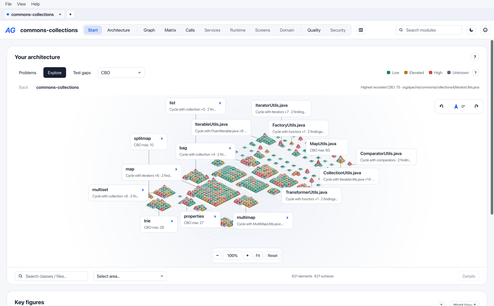
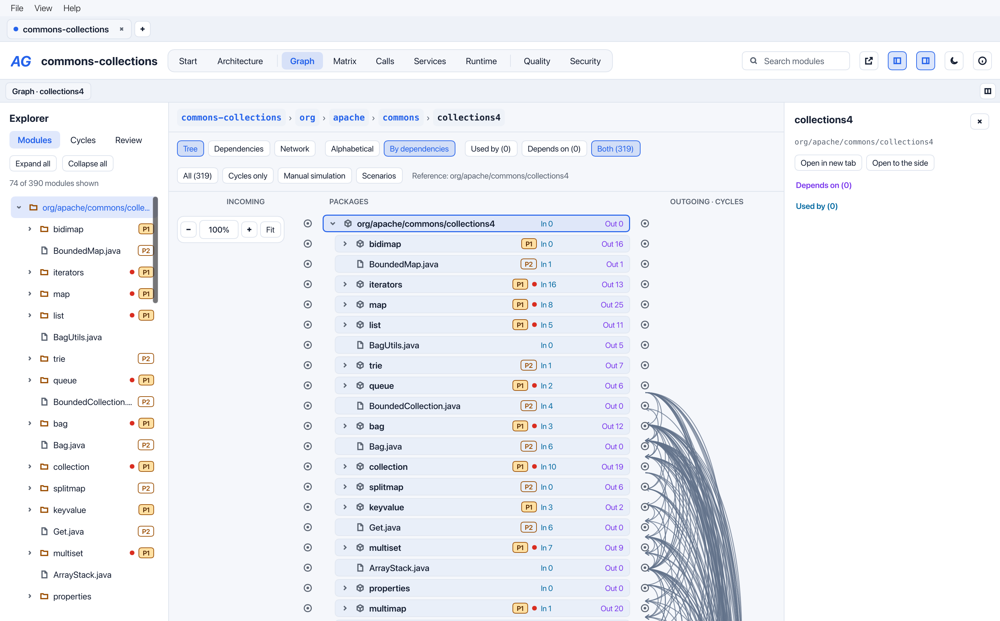

Desktop-Anleitung
Navigiere von der Repository-Übersicht zu Paketen, Dateien und Quellbelegen.
Die Oberfläche kennenlernen
Die Desktop-App behält in jeder Ansicht denselben Rahmen. Von oben nach unten:
- Menüleiste: Datei (File) öffnet Projekte (Projekt öffnen… / Open project…, zuletzt verwendete Projekte), exportiert und schließt sie. Ansicht (View) teilt Bereiche, wechselt Ansichten, Theme, Sprache und Vollbild und öffnet die Einstellungen (Settings). Hilfe (Help) prüft auf Updates.
- Projekt-Tabs: Jedes geöffnete Projekt hat einen eigenen Tab; + öffnet ein weiteres.
- Projektleiste: Projektname, Build-Einheiten in einem Monorepo und die Ansichten in drei Gruppen: Übersicht (Start, Architektur), Struktur (Graph, Matrix, Aufrufe, Services, Laufzeit) und Findings (Qualität, Sicherheit).
- Module suchen (Search modules) findet Pakete und Dateien; das Mondsymbol schaltet das dunkle Theme um.
- Bereichsleiste: Der rechte Knopf teilt die Ansicht in zwei Bereiche, sodass zwei Ansichten nebeneinander stehen können.
Unter diesen Leisten hat jede Ansicht eine Zeile für ihre Optionen. Im Graphen enthält sie den Darstellungsmodus, die Kantenrichtung und Nur Zyklen (Cycles only).
World View
Start zeigt eine Architekturlandschaft. Im Repository-Modus enthält sie erkannte Projekte und Service-Beziehungen. In einem Quellprojekt zeigt sie die verfügbaren Pakete, Klassen oder Dateien. Das sind unterschiedliche Analyseumfänge: Repository-Beziehungen sind nicht automatisch Aufrufe auf Quellebene.
| Aktion | Bedienung |
|---|---|
| Zoomen | Mausrad, + / - oder die Zoom-Knöpfe. |
| Verschieben | Ziehen oder Pfeiltasten. |
| Drehen | Q / E oder die Drehknöpfe. |
| Ein Paket untersuchen | Wähle eine Paketbeschriftung oder öffne ihre Fläche. Kehre mit Zurück oder der Pfadnavigation zurück. |
| Einen Service öffnen | Wähle seine Fläche und In Service zoomen (Zoom into service) oder wähle ihn in der Bereichsauswahl. |
| Darstellung zurücksetzen | Passe mit Fit den sichtbaren Ausschnitt an oder stelle mit Reset den ursprünglichen World-Zustand wieder her. |
Die Problems-Linse hebt Findings hervor. Explore wechselt die dargestellte Metrik, soweit Messungen vorliegen. Unbekannte Werte unterscheiden sich von niedrigen Werten. Höhe und Farbe einer Fläche sind nur zusammen mit der gewählten Metrik und ihrem Umfang aussagekräftig.
Mit Explore färbt die Metrikauswahl neben den Linsen jede Klassenfläche nach Complexity (höchste zyklomatische Komplexität einer Methode), CBO (andere verwendete Klassen), RFC (von einer Instanz aus aufrufbare Methoden), DIT (Vererbungstiefe), NOC (direkte Unterklassen), WMC (Summe der Methodenkomplexität) oder LCOM4 (zusammenhängende Methodengruppen; 1 = kohäsiv). Beschriftungen zeigen den höchsten Wert innerhalb eines Pakets; die Statuszeile nennt den höchsten erfassten Wert mit seiner Position. Graue Flächen haben keine Messung.

Auswahl und Details
Eine Auswahl fokussiert ein Element und seine Beziehungen. Öffne es mit Details oder Enter. Wähle ein anderes Element, um die offenen Details zu aktualisieren. Schließe sie mit Esc oder ×. Das Overlay verschiebt den Graphen nicht; Anheften kann einen eigenen Bereich reservieren, sofern die Ansicht es unterstützt.
Lies in den Details Quellstellen, Belegart und Hinweise zur Abdeckung. Eine dargestellte Kante kann eine Quellabhängigkeit, Konfigurationsreferenz oder abgeleitete Ereignisroute sein; die Ansicht benennt die Art.
Abhängigkeitsgraph
Die Baumdarstellung erhält die Pakethierarchie und zeichnet eingehende und ausgehende Beziehungen. Wähle ein Paket, bevor du Eingehend (Incoming), Ausgehend (Outgoing) oder Beide (Both) nutzt. Alle (All) kehrt zur weiteren Sicht zurück; Nur Zyklen (Cycles only) fokussiert zyklische Abhängigkeiten.
Klappe Pakete nur so weit wie nötig auf. Aggregation verändert die sichtbare Grenze; Zahlen auf Paket- und Dateiebene müssen daher nicht übereinstimmen. Eine Zyklusgruppe ist eine stark zusammenhängende Menge. Eine dargestellte Route ist ein Beispiel durch diese Menge, nicht zwingend jeder mögliche Zyklus.

Baummatrix
Lies Zeilen als Quellen von Abhängigkeiten und Spalten als Zielpakete. Eine gefüllte Zelle fasst Belege zwischen diesen Grenzen zusammen. Klappe eine Zeile auf, um ihre Dateien zu sehen; grenze große Projekte mit Suche, Umfang und Zyklusfiltern ein. Das Blättern durch Zielspalten entfernt keine Abhängigkeiten aus der zugrunde liegenden Analyse.
Die Beleganzahl in der Matrix kann von der Zahl unterschiedlicher Graphkanten abweichen. Prüfe die jeweilige Beschriftung, bevor du Zahlen verschiedener Ansichten vergleichst.
Architektur und arc42
Die Architekturansicht kombiniert vorhandene Dokumentation und generierte Belege. Erkunde mit der Bausteinhierarchie tiefere Paketebenen, bis zu drei dargestellte Ebenen. Die Diagramme fassen das verfügbare Modell zusammen; für sich allein weisen sie weder einen vollständigen Systemkontext noch ein produktives Deployment nach.
archguard doc . --arc42 --stdout
archguard doc . --arc42Der erste Befehl zeigt Markdown als Vorschau. Der zweite erstellt oder aktualisiert das arc42-Dokument mit Belegkapiteln und erhält manuelle Texte außerhalb generierter Blöcke. Halte Entscheidungen und Erläuterungen außerhalb dieser Blöcke.
Exportieren und teilen
Datei → Export (File → Export) schreibt die aktuelle Ansicht als Markdown mit Mermaid-Diagrammen, als JSON-Daten mit Belegen, als arc42-Dokumentation, als SVG-Diagramm oder als PNG-Bild. Nicht jedes Format passt zu jeder Ansicht; das Menü zeigt die passenden Formate.
Jede Analyse ist auch auf der Kommandozeile verfügbar: archguard diagram . listet die arc42-Diagramme und zeichnet eines im Terminal; Analysebefehle geben mit --format json JSON aus. Exporte können Projektnamen und Quellreferenzen enthalten; entscheide, welche Artefakte du weitergibst.